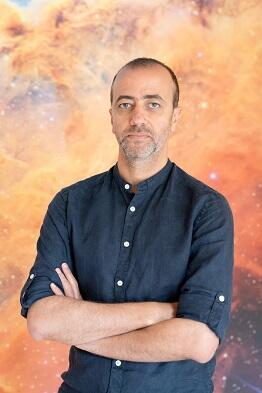

First sources of light
Searching for the earliest galaxies and stars, including metal-free Population III candidates, at z > 6.

HAAstrophysicist · CNRS · Institut d’Astrophysique de Paris
Using gravitational telescopes to unveil the first sources of light at Cosmic Dawn.
hakim.atek@gmail.com Institut d’Astrophysique de Paris · Sorbonne UniversitéI am an observational astrophysicist and Associate Astronomer at the Institut d’Astrophysique de Paris (IAP, CNRS / Sorbonne Université), with a collaborative affiliation at EPFL in Switzerland. My research uses gravitational telescopes to reveal the first sources of light at Cosmic Dawn and to chart the timeline of cosmic reionization. With my team, I combine deep observations from JWST, HST and Euclid with numerical simulations and models of galaxy and black hole formation.
Research
Searching for the earliest galaxies and stars, including metal-free Population III candidates, at z > 6.
Measuring the ionizing photon budget of faint galaxies to find which sources transformed the intergalactic medium.
Using massive galaxy clusters as magnifying lenses, and building the lens models that make the faintest galaxies measurable.
Projects

JWST Cycle 2 · PI. Ultra-deep lensing survey of Abell S1063.↗ UNCOVER JWST · lensing cluster Abell 2744.↗
VENUS
JWST · lensing cluster Abell 2744.↗
VENUS JWST Treasury · survey of lensing clusters.↗
Euclid Consortium
JWST Treasury · survey of lensing clusters.↗
Euclid Consortium Primordial Universe science working group.↗
MOONS Consortium
Primordial Universe science working group.↗
MOONS Consortium MOONRISE survey on the VLT.↗
Nancy Grace Roman Space Telescope
MOONRISE survey on the VLT.↗
Nancy Grace Roman Space Telescope NASA wide-field infrared survey mission.↗
NASA wide-field infrared survey mission.↗
Emblems are placeholders: drop official logos into assets/logos/ (glimpse.png, uncover.svg, venus.svg, euclid.svg, moons.svg, roman.svg) and they replace them automatically.
The Team
Teaching
Publications
In the news
Contact
Institut d’Astrophysique de Paris
Sorbonne Université
98bis Boulevard Arago
75014 Paris, France